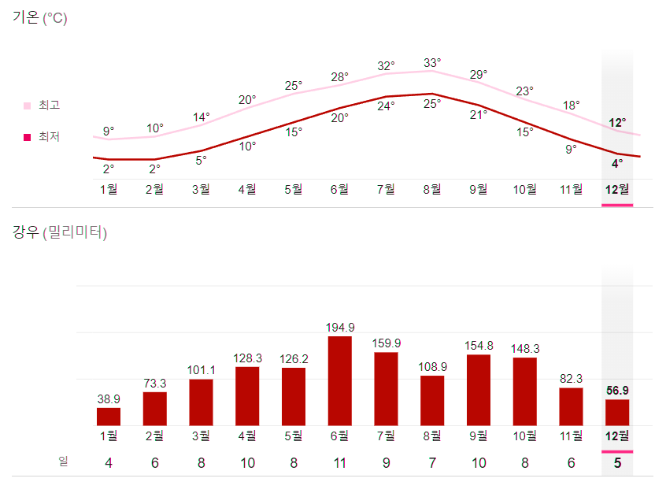
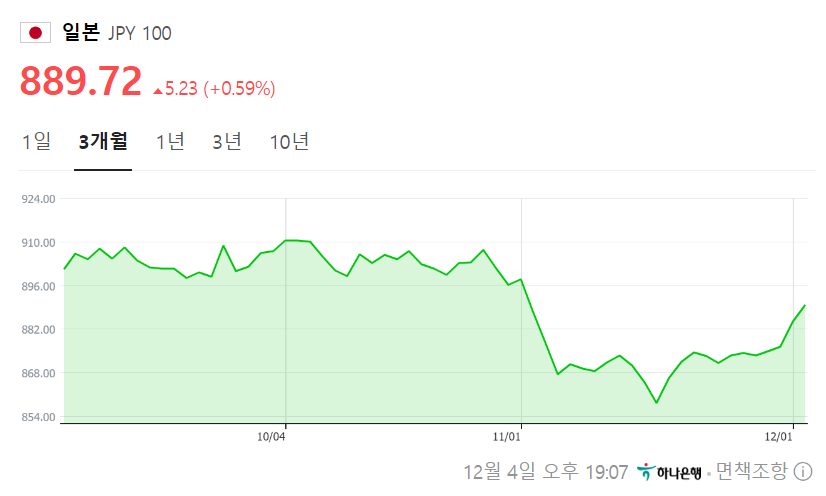

당신의 특별한 오사카 여행을 보다 편하게 누릴 수 있도록.
당신의 특별한 오사카 여행을 보다 편하게 누릴 수 있도록.
다양한 패스부터 주의할 점까지 오사카 여행 정보를 한눈에 확인하세요.
|  | |||
| 봄 (3~5월) 온화한 봄 날씨, 오사카 여행의 최적기 | 여름 (6~8월) 찌는듯한 더위와 장마, 여행이 힘든 시기 | ||
| 가을 (9~10월) 시원하면서 온난한 여행하기 좋은 계절 | 겨울 (11~2월) 단풍과 함께 찬 바람이 부는 계절 | ||
|  | 엔화 환율 동향 (23.12.04) 엔화 환율은 올 여름 900원대를 기점으로 낮아져, 10월 말 850원대로 내려가 15년만에 최저치를 기록했습니다! 일본의 여러 상황이 맞물려 환전에 유리한 상황이오니 앱 혹은 환전센터를 활용해서 미리 여행을 준비해보세요! 일본에서 구매하면 디젤, 꼼데가르송, 비비안 웨스트우드 등 다양한 브랜드의 제품에 백화점 게스트 카드 할인 + 면세의 혜택을 적용하여 보다 저렴하게 구매할 수 있습니다. 한국에서 가격을 비교해보고 출발하는 것 잊지 마세요! |
| 종류 | 일별 분류 | 지하철 | 전철 | 버스 | 추가적 혜택 | 가격 |
|---|---|---|---|---|---|---|
| 오사카 주유 패스 | 1일권 | 오사카 지역내 사철 O | 전 버스 O | 모든 버스 노선 O | 약 35개 관광지 무료 입장 | 2,800엔 |
| 2일권 | 오사카 지역내 사철 O (일부 노선 제외) | 오사카 지역 전 버스 O | 모든 버스 노선 O | 3,600엔 | ||
| JR 웨스트 간사이 패스 | 1일권 | X | 간사이 전지역 JR노선이용 가능 | X | 관광패스 제공 (하단 참조) | 2,800엔 |
| 2일권 | 4,800엔 | |||||
| 3일권 | 5,800엔 | |||||
| 4일권 | 7,000엔 | |||||
| 간사이 쓰루 패스 | 2일권 | 오사카,교토,고베 전 노선 O | 게이한/긴테츠 한큐/난카이 노선 O | 시영 버스 O | 약 350여개 매장, 어트렉션할인 | 4,380엔 |
| 3일권 | 5,400엔 |
※ 오사카 주유패스 1일권 : 오사카 메트로 라인 + 한큐 / 게이한 / 난카이 / 한신 / 킨테츠 노선 이용가능, JP라인 이용 불가
※ 오사카 주유패스 2일권 : 오사카 메트로 라인만 이용 가능, JR라인 이용 불가
※ JR 웨스트 간사이 패스 : 교토 시영지하철, 교토 관광패스, 한큐 교토선 패스 제공